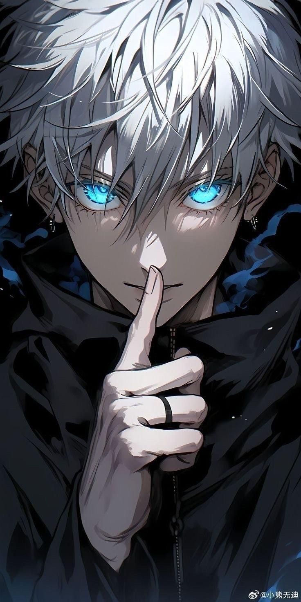

Satoru Gojo

Satoru Gojo is a fictional character from Gege Akutami's manga Jujutsu Kaisen.
He was first introduced in Akutami's short series Tokyo Metropolitan Curse Technical School as the mentor of the cursed teenager Yuta Okkotsu at Tokyo Prefectural Jujutsu High School.
Gojo was designed by Gege Akutami to be a formidable yet endearing figure who is passionate about his students.
.He is voiced by Yūichi Nakamura in Japanese and Kaiji Tang in English in the animated adaptations by MAPPA.
- Father's Name:
- Sugawara Michizane
- Mother's Name:
- Hanako
- Best Friend's:
- Suguru Geto
- Birthday:
- December 7, 1989
Power OF Gojo Satoru
- fourfold Black Flash Barrage. ...
- Blossoming Emotion. ...
- Six Eyes Legacy. ...
- Limitless Dominion. ...
- Cursed Technique Lapse: Blue. ...
- Cursed Technique Reversal: Red.
Skils Of Gojo Satoru
- Limitless
- Black Flash
- Overall skill
- Infinity
- Cursed energy
- Reverse Cursed Technique
Somewhere In Japan.
street: Metropolitan City,
Tokoyo,Japan
pin:0000000

Best Dialouges of Gojo Satoru
“You're lucky if you can die a normal death after running into a curse. ...
“ Maybe I should just kill all the higher-ups. ”
“I've always been a nice guy who cares for my students.”
For More Detail Click Here
Watch Here All Seasons
Satoru_Gojo_@gmail.com
+18000000